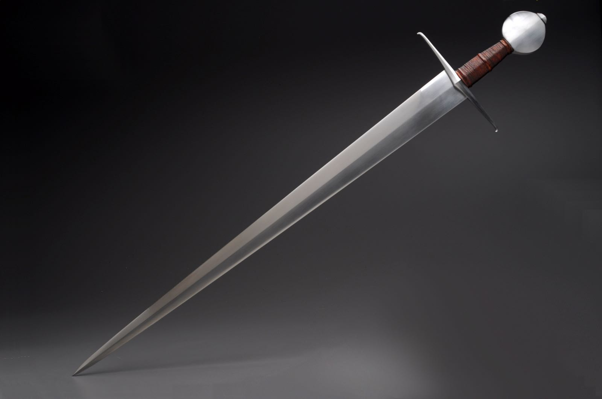
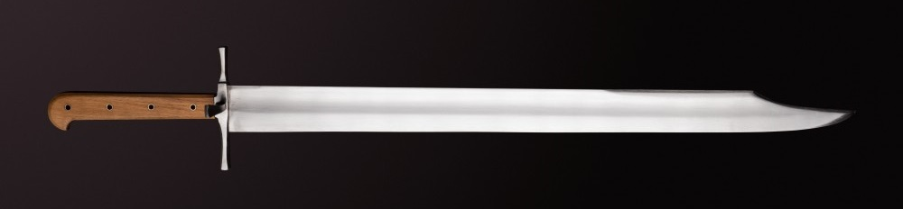
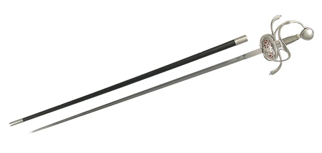
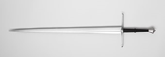
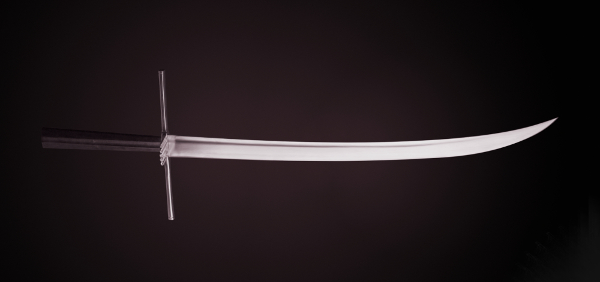
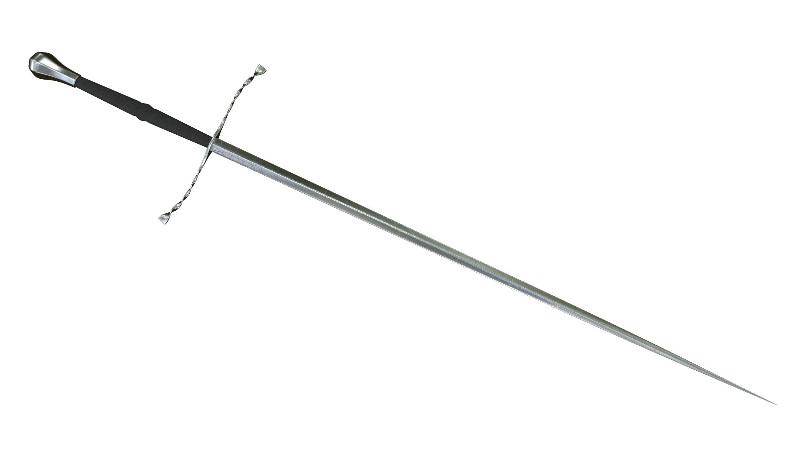
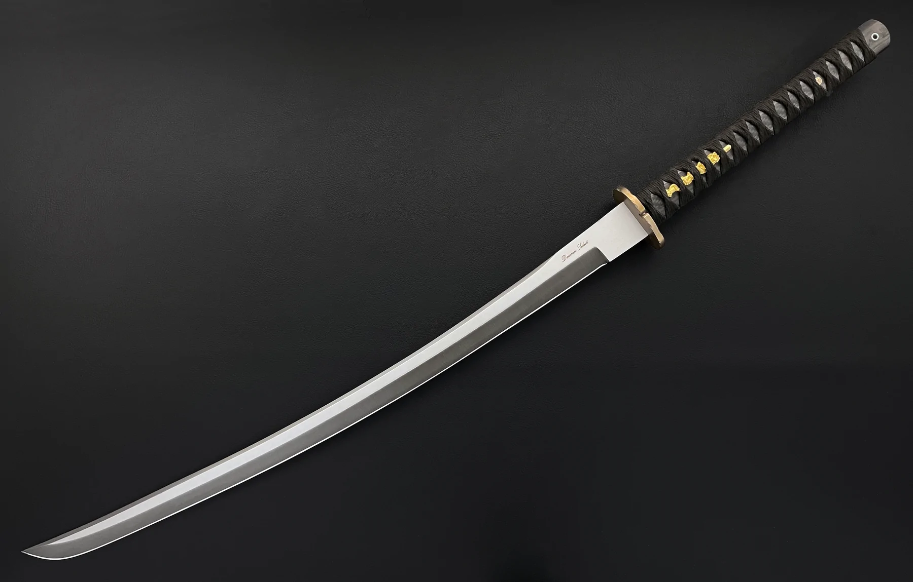
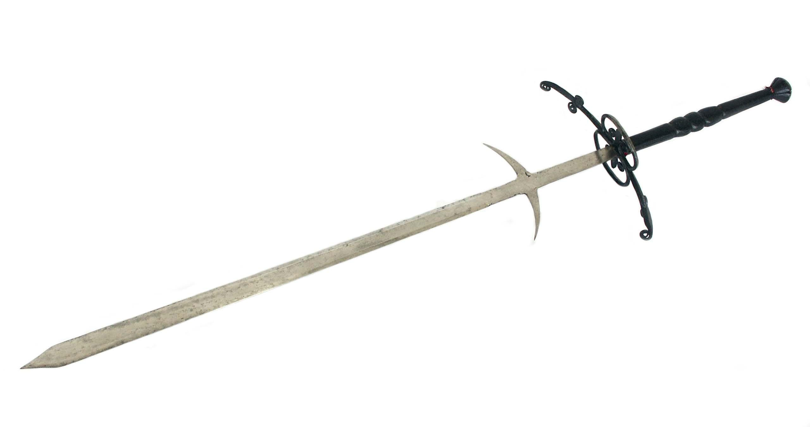

- 
- Armingsword
- Double edged, one-handed swords.
|
- 
- Messer
- Translates to "knife". It's constructed like a knife, so knife makers could legally make them.
|
- 
- Rapier
- Specialised thrusting swords. Later ones didn't even have an edge.
|
- 
- Longsword
- Similar to arming swords, but two handed. The back edge allows for some special cuts.
|
- 
- Kriegsmesser
- "warknife" The two-handed version of the messer.
|
- 
- Estoc
- A two-handed thrusting sword. Long and stiff.
|
- Sabre
- Sabres are single-edge, curved swords. The curve makes them better at cutting.
|
- 
- Katana
- As long as a one-handed sword, but point of balance is so far from the handle, that they must be used with two hands.
|
- 
- Greatsword
- They are as long as the wielder is tall.
|